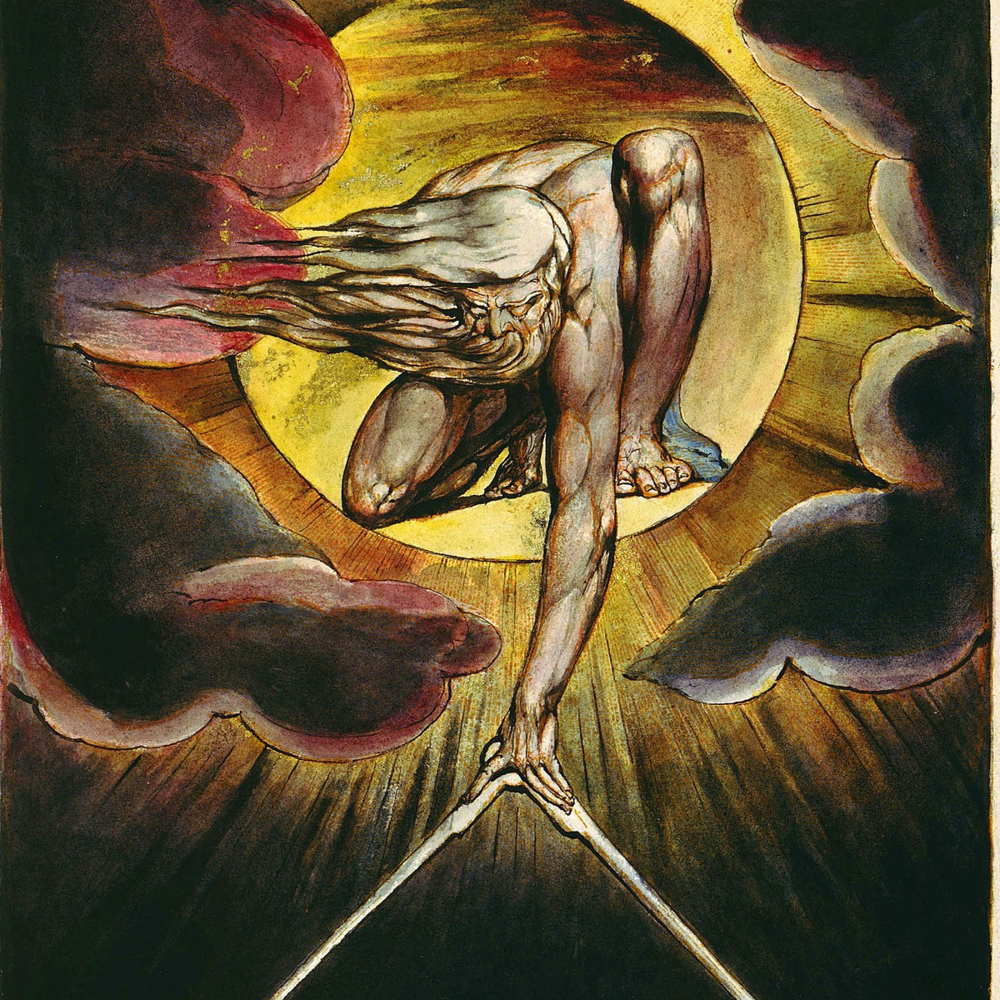
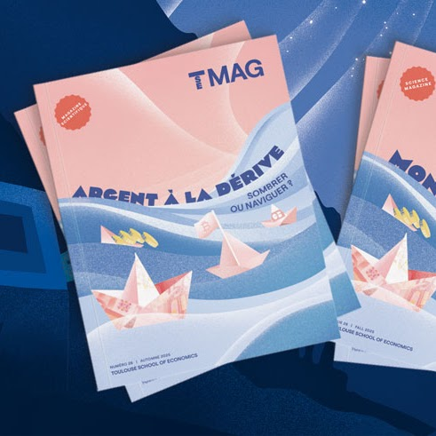

Popular audience
-
D'où vient notre sens de la justice?
France Inter
-

La religion expliquée par l'évolution ?
La Tronche en Biais
-
Why is self-control moralized?
Evolutionary Psychology: The Podcast
-
What's punishment like in small-scale societies?
HBES
-
Moral emotions, punishment, and puritanical morality
The Dissenter (Ricardo Lopez)
-

The moral limits of markets (with Jean Tirole)
TSE Magazine
-
Les institutions : des outils pour résoudre les problèmes de cooperation
Société Française d'Écologie
-
La morale puritaine
DEC Actualités